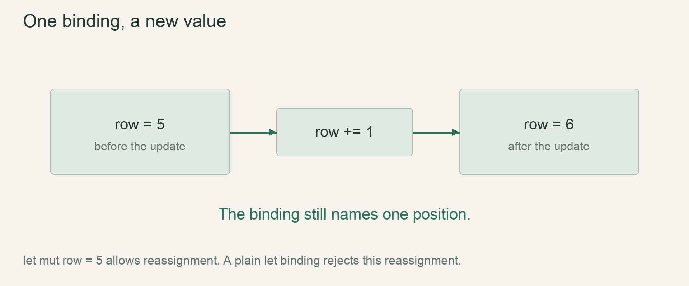

Start / First stepsLesson 05 of 100 · ~6 min reading + build time
Choose numeric types and units
Distinguish integer grid coordinates, floating-point drawing units and elapsed seconds without accidental type or unit mixing.
Previously: Change state deliberately. Keep that working result available before starting this lesson.
Why we need this now
A number alone does not explain what it measures. Column 12 is a cell count; drawing x 48.0 is a position in drawing units; 0.05 is a duration in seconds. Types and names help us keep those meanings separate before movement bugs become visually confusing.
Your result: Distinguish integer grid coordinates, floating-point drawing units and elapsed seconds without accidental type or unit mixing.

01Whole positions belong to an integer grid
A grid coordinate identifies a particular cell. Between column 12 and column 13 there is no half-cell storage slot in this model, so we begin with i32, a signed 32-bit integer. Signed values will later let the world extend to negative columns. The annotation appears after the name: let column: i32 = 12;.
Integer storage has a finite range. We are not proving an unlimited-coordinate world by choosing i32; production coordinate range is an architectural decision. Here the type is large enough for our teaching fixture and makes the valid meaning clear. Small examples should expose boundaries rather than silently claiming infinite precision.
02Drawing asks for a different representation
macroquad drawing functions take floating-point values for coordinates and sizes. A float can represent fractional values, which suits drawing transformations and measured durations. f32 is a 32-bit floating-point type. The literal 4.0 makes our drawing size a fractional-capable quantity rather than an integer count.
Rust does not silently convert every integer argument into a float when an API expects one. At the drawing boundary, convert deliberately: column as f32 * cell_size. The grid remains integer based; only its presentation becomes a drawing coordinate. This helps preserve exact occupancy while letting the rendering API use its required representation.
03Type correctness is necessary, not sufficient
Both row and column may be i32, yet swapping them is still a semantic error. Likewise two f32 values can measure seconds and pixels, and multiplying or adding them carelessly can compile while making no sense. Names such as elapsed_seconds and screen_x carry information the primitive type alone cannot encode.
For this lesson, inspect each expression by asking “what does its input count, and what does its output measure?” Cell count multiplied by pixels per cell gives a pixel position. Adding elapsed seconds directly to a row would mix meanings. Later, narrower structs and interfaces can strengthen these boundaries; clear naming is the first inexpensive step.
04Use conversions deliberately and test their limits
The small teaching coordinates convert exactly to f32, but casts are not a general promise that all integers retain their precision as floats. Large integers can lose detail in floating-point representation. Keep world coordinates in their integer form for simulation and subtract camera origin before drawing when the world becomes large.
Try assigning 12.5 to an i32 binding and read the error. Then try 12 in an explicitly f32 binding and repair it to 12.0. These controlled failures distinguish type compatibility from a runtime calculation. Do not silence them with arbitrary casts until you can explain why the conversion is appropriate at that boundary.
Read → predict → run → change
Walk through the working example
Complete focused example — src/main.rs
Download this worked example ↧
fn main() {
let column: i32 = 12;
let row: i32 = 5;
let cell_size: f32 = 4.0;
let screen_x: f32 = column as f32 * cell_size;
let screen_y: f32 = row as f32 * cell_size;
let tick_seconds: f64 = 0.05;
println!("Drawing: {screen_x}, {screen_y}");
println!("Tick duration: {tick_seconds} seconds");
}Read what each part does
- The conversion happens where discrete state becomes presentation.
- f64 is used for the teaching accumulator to reduce ordinary accumulation error, not to promise exact calendar ticks.
- Printed formatting is not the stored numeric type.
Expected result
Drawing: 48, 20
Tick duration: 0.05 seconds. Default float formatting need not print a trailing .0.Exact version numbers, paths and compiler wording may differ. Compare the behavior and file locations, not incidental output formatting.
Prediction · repair · transfer
Exercises you actually do
Write a prediction or make an attempt before opening a solution. Use the hint if stuck; then compare reasoning and verify with the stated check. A different implementation is fine when it satisfies the same contract.
Find the boundary
Label every number in the example as cells, pixels per cell, drawing units or seconds.
Need a hint?
The same primitive type can represent different units.
Worked solution
column and row count cells. cell_size measures drawing units per cell in the low-DPI prototype. screen_x and screen_y measure drawing position. tick_seconds measures elapsed time. Only the coordinate-to-drawing calculation should combine the coordinate count and scale.
How to verify your result
No number is described merely as a float without its meaning.
Repair a type mismatch
Assign 12.5 to column: i32, run check, and fix the model without rounding the grid silently.
Need a hint?
A cell index is a discrete position.
Worked solution
Use an integer column for occupancy. If you need a fractional visual offset, store a separate drawing value. Changing the simulation coordinate to a float would alter the model; it is not a harmless compiler-error repair.
How to verify your result
The grid coordinate remains integer and the program compiles.
Compute another position
Use column -2 and row 9 with cell size 4.0. Predict both results.
Need a hint?
Signed coordinates can be negative even before our view supports them.
Worked solution
The conversion yields -8 and 36. A negative drawing x may lie outside the window; that is a visibility question, not an invalid arithmetic operation.
How to verify your result
Your prediction separates numeric validity from on-screen visibility.
When it goes wrong
Start with the observed symptom. Change one assumption at a time instead of pasting fixes until the error disappears.
mismatched types: expected f32, found integer
What is happening: The literal or API argument has the wrong numeric representation.
Try this: Use a floating literal or a justified boundary conversion.
A negative coordinate later becomes a huge index
What is happening: It was converted to usize before validation.
Try this: Check signed bounds first; the safe-index lesson implements that ordering.
Large-world pixels jitter
What is happening: Large world integers were converted directly to a low-precision float.
Try this: Keep simulation coordinates integer and draw relative to the nearby camera origin.
Explain it without the example
Why keep grid coordinates as integers instead of using drawing floats everywhere?
Reasoning to compare
Grid positions identify discrete cells. Floating-point values suit drawing and elapsed time; conversions belong at boundaries where their meanings change.
Self-check only: test a prediction or ask your tutor if anything still feels arbitrary.
For your YouTube series
Turn the lesson into an episode
Open with the problem or result
A number alone does not explain what it measures. Column 12 is a cell count; drawing x 48.0 is a position in drawing units; 0.05 is a duration in seconds. Types and names help us keep those meanings separate before movement bugs become visually confusing.
Teach in this order
- Whole positions belong to an integer grid
- Drawing asks for a different representation
- Type correctness is necessary, not sufficient
- Use conversions deliberately and test their limits
Record this demonstration
Distinguish integer grid coordinates, floating-point drawing units and elapsed seconds without accidental type or unit mixing.
Close with what the viewer can now explain
Explain the result without reading the code, make one predicted change, then show the observed result.
A lesson can span several recordings. The episode beats are a teaching outline, not a claim that every viewer learns at the same speed.
Finish with evidence
cargo check succeeds after repair. Your cell position stays an integer until drawing.
Make one small variation without copying: predict it, run it and explain any difference. On another day, repeat one exercise from memory before starting the next lesson. Ask your tutor about any step you can execute but cannot explain.
This is an attempt marker, not a grade. Learning records are written only after demonstrated understanding.
Primary sources for this lesson
Use sources to verify the mechanism. The lesson itself supplies the instructions; the links are not a substitute for teaching them.